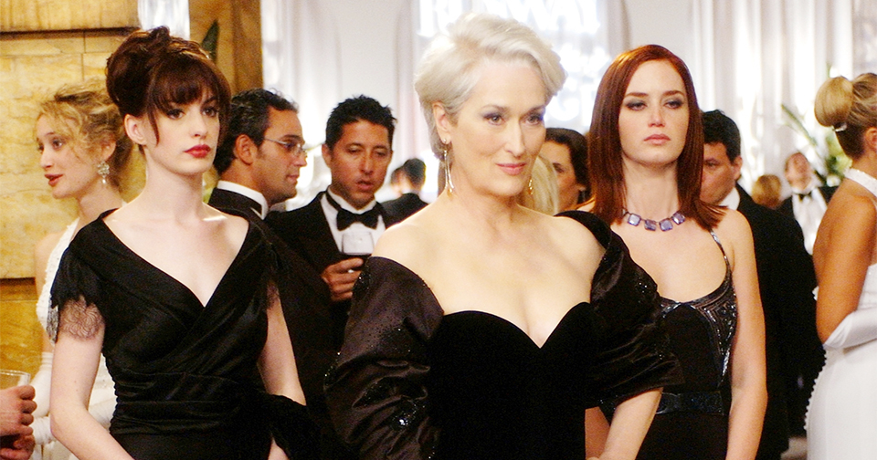
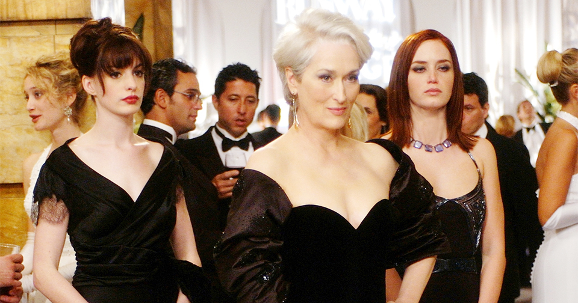

Действие происходит в Нью-Йорке. Провинциалка и выпускница факультета журналистики Андреа получает должность личной помощницы главного редактора крупнейшего журнала о моде – акулы Миранды Пристли. Но девушка не ожидала, что ей придётся отказаться не только от личной жизни, но и от свободного времени вообще. Главный редактор придирчиво относится к поведению и провинциальному вкусу Андреа, но трудности ещё больше заставляют её показать, на что она способна…
Мерил Стрип — Миранда Пристли, главный редактор журнала Подиум. Её боятся все сотрудники редакции и многие представители мира моды. Её власть настолько велика, что она легко может отказаться от непонравившихся ей снимков с фотосессии стоимостью $300,000 и заставить дизайнера переделывать всю коллекцию, просто слегка поджав губы в знак того, что она её не устраивает. В начале фильма замужем вторым браком, но к концу фильма разводится, две горячо любимые дочери-двойняшки. Энн Хэтэуэй — Андреа (Энди) Сакс, выпускница Northwestern University по специальности «журналист», которая, несмотря на отсутствие знаний в области моды, была принята на работу младшей ассистентки властной и требовательной Миранды Пристли. Эмили Блант — Эмили, старшая ассистентка Миранды Пристли, напарница Энди. Послушно выполняет все задания босса, терпеливо выслушивает критику и издёвки в свой адрес и надеется, что за хорошую работу Миранда возьмет её с собой на осеннюю неделю моды в Париж. Стэнли Туччи — Найджел, креативный директор журнала Подиум. Единственный человек в редакции, которому Энди, как ей кажется, может доверять, хотя он тоже критикует её манеру одеваться и «полноту». Также один из немногих людей, кто умудряется соответствовать всем требованиям Миранды. Фанатично предан своей профессии. Саймон Бейкер — Кристиан Томпсон, успешный и привлекательный писатель, очарованию которого Андреа не в состоянии сопротивляться. Помогает ей получить неопубликованную рукопись седьмой книги о Гарри Поттере для дочерей Миранды, чем спасает её от увольнения, а также намекает на то, что может помочь Энди в её стремлении стать журналистом. Эдриан Гренье — Нейт Купер, бойфренд Энди, повар в одном манхэттенском ресторане. Ближе к концу фильма они расходятся, потому что Энди всё больше времени уделяет своей работе, но в одной из финальных сцен делает намёк, что их отношения могут иметь продолжение. Трэйси Томс — Лили, близкая подруга Энди, по словам Нейта, «работает в этой галерее и делает… Ну… Ох, прости, а что ты там всё-таки делаешь?» Рич Соммер — Даг, финансовый аналитик, друг Энди по колледжу. Дэниэл Санжата — Джеймс Холт, молодой преуспевающий дизайнер. Дэвид Маршалл Грант — Ричард Сакс, отец Энди. Тибор Фельдман — Ирв Равитц, глава совета директоров, как говорится — «рост маленький, огромное эго». Жизель Бюндхен — Сирина, сотрудница редакции Подиума, подруга Эмили. Химена Ойос — ЛючияChanel пожелал одеть Хэтэуэй для фильма, Dolce & Gabbana и Calvin Klein также помогли Филд. Хотя Филд не стала делать Стрип похожей на Винтур, она одела её в основном в наряды от Prada. (По собственным подсчетам Филд 40 % туфель, которые носила в фильме Стрип, были производства Prada). Филд также добавила, что зрители не должны видеть в этом намека на Винтур, и что «Мерил нисколько не похожа на Анну, поэтому даже если бы я захотела скопировать Анну, то не смогла бы». И всё же было решено, что, подобно Винтур и её предшественнице Диане Вриленд, у Миранды должна быть какая-то отличительная черта − белый парик с хохолком, который она носила вместе с другой одеждой. Филд сказала, что избежит преобладания модных тенденций в образе Миранды, заменив их стилем «одежды богатой леди». Она не хотела, чтобы люди легко признавали то, во что Миранда была одета.Дизайн костюмов
Фрэнкел, который работал с Патрисией Филд над фильмом «Рапсодия Майами» ещё до его дебютного «Секса в большом городе», знал, что подобрать хорошие костюмы для актёров, снимающихся в фильме об индустрии моды — задача крайне сложная. «Моя роль заключалась в том, чтобы набрать актёров и уйти», — шутил он позже[8]. Дизайнеры, не захотевшие появиться на экране, очень помогли Филд с костюмами. Однако изначально запланированного на это бюджета в $100 000 не хватило, его пришлось пополнять с помощью друзей из индустрии. В конечном итоге дизайн костюмов обошёлся создателям фильма в $1 миллион, что сделало фильм одним из самых дорогих в истории по этому показателю. Одно только ожерелье Миранды было куплено за $100 000.
.jpg) 
смотреть фильм

смотреть фильм